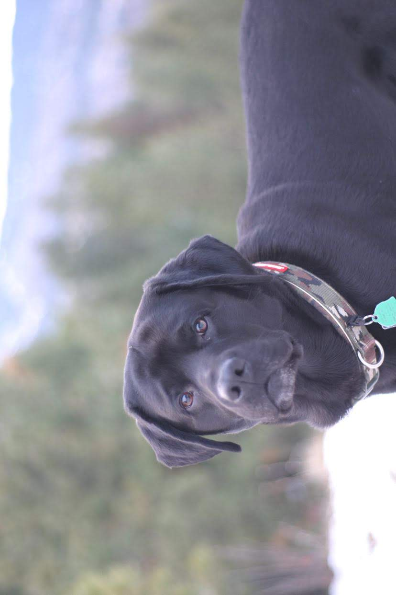

ABOUT ME
I am from Spokane Valley Washington and currently in my second semester at Brigham Young University-Idaho. Before that, I spent 13 years learning and growing in the Washington State educational system, and two additional years on a mission for the Church of Jesus Christ of Latter-Day Saints in Kentucky. Throughout the years I have had countless experiences that have and will continue to shape who I am today, just like you. I am currently majoring in Computer Information Technology, and it has been fun developing and learning skills with various systems so far. Aside from that, I love to be outdoors camping, cliff jumping, playing some spikeball and hiking with the dog. All in all, anything around friends and family is bound to be a good time. Currently learning how to build websites, so let me know of any feedback/compliments.
TESTIMONALS
Matthew is dependable and hardworking. Two qualities that are rare to find in one person - Trent Kelleher, Gilbert Arizona
Matt Kannapien is one of the most inspirational peopleI have ever met. He’s a fantastic leader who uplifts and motivates everyone around him - Cache Purcell - Victorville, California.
He is a respectable, funny, and kind young man. Imagine my surprise when I found out he was my cousin!- Joseph Michael - Oregon
Matt is a homie who is always is down to have fun, but never with me - Jaydon Davis - Texas